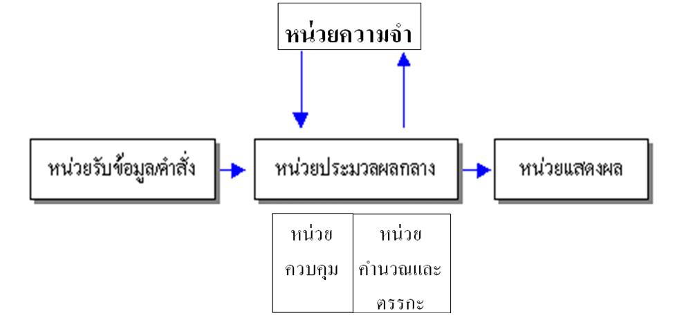

ในการทำงานของคอมพิวเตอร์ จะมีขั้นตอนการทำงานพื้นฐาน 4 ขั้นตอน ซึ่งประกอบด้วย การรับข้อมูล การประมวลผล การแสดงผล และการจัดเก็บข้อมูล หรือที่เรียกย่อๆ ว่า IPOS (Input Process Output Storage cycle)
1. รับข้อมูล (input) คอมพิวเตอร์จะทำหน้าที่รับข้อมูลเพื่อนำไปประมวลผล อุปกรณ์ที่ทำหน้าที่รับข้อมูลที่นิยมใช้ในปัจจุบัน ได้แก่ แป้นพิมพ์ (keyboard) และเมาส์ (mouse)
2. ประมวลผล (process) เมื่อคอมพิวเตอร์รับข้อมูลเข้าสู่ระบบแล้ว จะทำการประมวลผลตามโปรแกรมหรือคำสั่งที่กำหนด เช่น การคำนวณภาษี การคำนวณเกรดเฉลี่ย เป็นต้น
3. แสดงผล (output) คอมพิวเตอร์จะแสดงผลลัพธ์ที่ได้จากการประมวลผลไปยังหน่วยแสดงผล อุปกรณ์ที่ทำหน้าที่แสดงผลที่ใช้แพร่หลายในปัจจุบัน ได้แก่ จอภาพ (monitor) และเครื่องพิมพ์ (printer) เป็นต้น
4. จัดเก็บข้อมูล (storage) คอมพิวเตอร์จะทำการจัดเก็บข้อมูลลงในอุปกรณ์เก็บข้อมูล เช่น ฮาร์ดดิสก์ (hard disk) แผ่นฟลอบปี้ดิสก์ (floppy disk) เป็นต้น
โครงสร้างระบบคอมพิวเตอร์
องค์ประกอบของคอมพิวเตอร์
วงจรการทำงานของคอมพิวเตอร์
ความหมายและความเป็นมา
คอมพิวเตอร์
สรุป โครงสร้างระบบคอมพิวเตอร์
ภาษาคอมพิวเตอร์
ข้อมูล ผู้จัดทำ